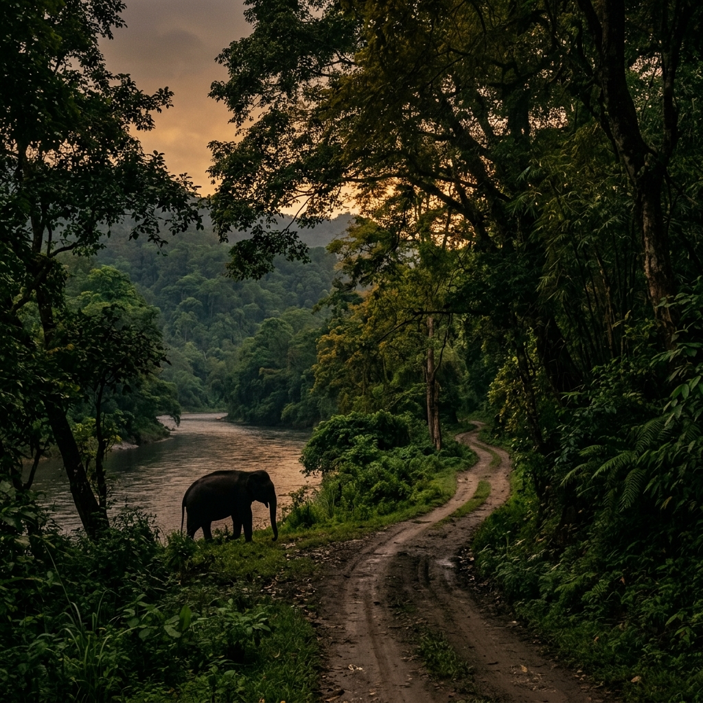
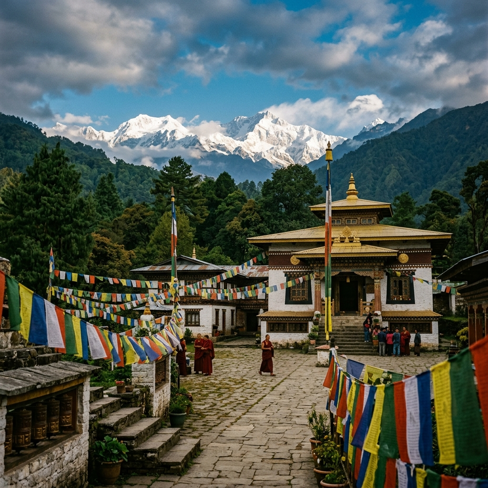

Handpicked Destinations
From misty tea gardens to ancient monasteries — explore the hidden soul of the Eastern Himalayas.

Darjeeling Hills

Kalimpong Hills

Dooars

All Over Sikkim
🌿 West: Pelling, Uttarey
🛣️ East: Zuluk, Aritar
☀️ South: Namchi, Ravangla
Darjeeling Hills, Kalimpong Hills, Dooars, and Sikkim together offer a unique blend of natural beauty, culture, wildlife, and adventure in the Eastern Himalayas. The Darjeeling Hills are famous for their rolling tea gardens, colonial heritage, stunning views of Kanchenjunga, and the historic Darjeeling Himalayan Railway. Visitors can explore monasteries, bustling markets, and experience the region’s rich Himalayan culture.
The Kalimpong Hills provide a peaceful mountain retreat with scenic viewpoints, flower nurseries, monasteries, and charming villages, making it an ideal destination for relaxation and nature lovers.
The Dooars, located in the Himalayan foothills, is known for its lush forests, tea estates, rivers, and abundant wildlife. Attractions such as Jaldapara National Park and Gorumara National Park offer exciting wildlife experiences.
Meanwhile, Sikkim enchants travelers with snow-capped peaks, alpine lakes, Buddhist monasteries, and breathtaking landscapes. Together, these destinations create a complete Himalayan experience suitable for families, couples, nature enthusiasts, and adventure seekers throughout the year.